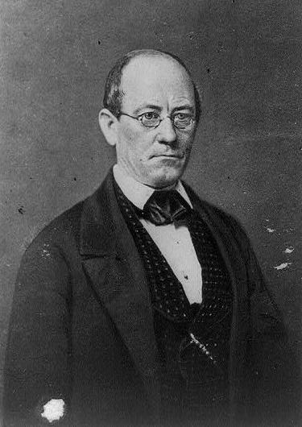

|
One of the most serious problems facing the Confederate
States of America during the Civil War was supplying its
armies and its civilians. Although most Southerners lived
on farms and plantations, by the end of the war many parts
of the Confederacy simply did not have enough food.
There were a number of reasons for shortages in cities
and specific regions of the Confederacy. A major factor was
simply the occupation of farming country and the destruction
or confiscation of crops and livestock by Union troops.
Other important reasons also include the presence of

The Richmond Bread Riots of 1863 were a
product of the many challenges facing women on the Confederate homefront.
|
hundreds of thousands of hungry Union and Confederate
soldiers in places such as northern Virginia, western
Tennessee, and central Mississippi that made it almost
impossible for civilians living in those areas to get enough
food; the inability of the South to keep roads open and
railroads operating; the crowding of thousands of refugees
into towns and cities; the enrollment of many farmers in the
Confederate army; and the tightening blockade of Southern
ports. All of these caused people to go hungry and, in some
cases, starve in many parts of the Confederacy. To make
matters worse, rising prices made it hard for people to buy
the goods that were available. With inflation rates in the
four figures, one Virginia woman discovered late in the War
that $100 in Confederate money bought a few pounds of fatty
bacon, three candles, and a pound of poor butter.
The Confederate government tried to force planters to
raise food crops rather than cotton, and local governments
sometimes set up markets at which poor people or the
families of soldiers could buy necessities at relatively low
prices. In addition, Southerners found a number of clever
substitutes for their normal diet, with unusual replacements
for coffee, salt, sugar, and other basics. But none of
these actions solved the problem of hunger in the
Confederacy. Not surprisingly, many Southern civilians grew
angry about this state affairs. When residents of a number
of towns and cities believed that Confederate government or
military officials were keeping food from them, riots broke
out. Disturbances occurred in large cities such as Atlanta,
Macon, Columbus, and Augusta, Georgia, and in smaller towns
like Salisbury and High Point, North Carolina, and Sherman,
Texas. Even in Mobile, Alabama, one of the last ports in
the Confederacy to be captured by the Union, residents
feared in the fall of 1864 that there would not be enough
food to last through the winter. A mob waving signs that
demanded "bread or blood" looted the stores on one of the
city's main streets. Eventually, almost every Confederate
state had experienced at least one riot over food shortages.
The most famous food riot took place in Richmond,
Virginia, in April 1863. With a population that grew larger
every week, with its nearby farmland frequently occupied or
fought over by both armies, and with sometimes unreliable
transportation links to other parts of the Confederacy,
Richmond was one of the most crowded and most expensive
cities in the Confederacy. A complicated pass system-the
Army wanted to make sure spies did not enter the Confederate
capital-discouraged farmers from coming into the city to
sell their products. A heavy snowfall in mid-March was the
|

John Letcher
|
last straw, and hard-pressed women, desperate to feed their
families, began gathering at a Baptist church on April 2nd.
They decided to march to the state capitol to ask for help
from Governor John Letcher. Along the way, other women-and a
number of men and boys-joined them. Letcher spoke briefly
to the several hundred people gathered outside the
governor's mansion, but when he went back inside without
giving them any answers, the crowd turned violent--some took
out hatchets, a few pulled pistols out of their pockets.
The mob spread over a ten-square-block area, breaking
into stores, taking not only bread and meat-but also
jewelry, clothes, and other items. The governor and mayor
failed to calm them, and the mob did not pause until a small
unit of Confederate troops and President Jefferson Davis
appeared in their path. Davis threw all of the money he had
in his pockets at the rioters, then took out his pocket
watch and declared that if they did disperse in five
minutes, the soldiers would fire on them. When the captain
commanding the men loudly ordered them to load their rifles,
the rioters went home.
Sometimes riots did not end so peacefully. Late in the
war, when a group of Galveston, Texas residents and a few
soldiers stationed in the city demanded that local officials
share the military provisions stored in the city, a
Confederate regiment fired over the heads of the protestors,
accidentally killing one of the protesting soldiers.
The food riots were minor episodes in the history of the
Confederacy, but they exemplify how economic problems and
political and social differences weakened the Confederate
War effort.
Source: Joan Waugh, ed., Facts on File Encyclopedia of American
History: Civil War and Reconstruction, 1856 to 1869 (New York: Facts on
File, 2003), 129-130.
|